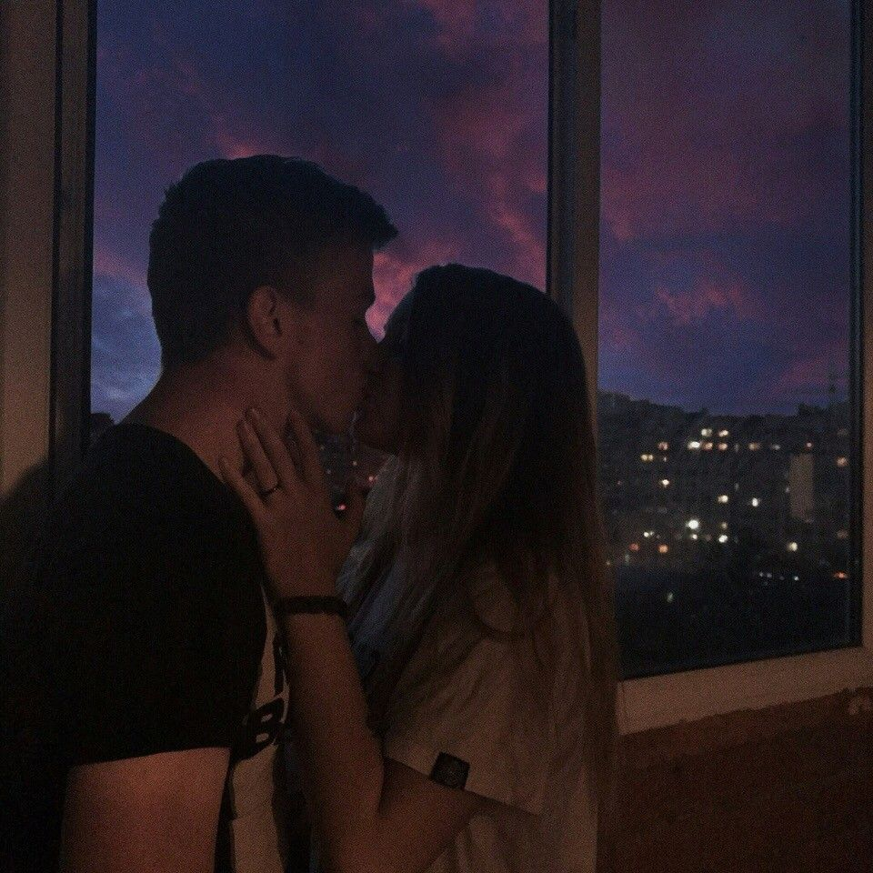

История о поцелуе в 14 лнт
Ветер трепал волосы, щекотал щеки и гонял опавшие листья по парку. Багряное солнце клонилось к горизонту, окрашивая кроны деревьев в медовые оттенки. Мне, Лизе, было всего четырнадцать, и я чувствовала себя чертовски взрослой, сидя на краю старого фонтана рядом с Ником.
Ник был… всем. Лучшим другом, доверенным лицом, объектом тайных девичьих грез. Мы знали друг друга с песочницы, делили конфеты, гоняли мяч во дворе и вместе строили штаб в старом дупле дуба. Но в последнее время что-то изменилось. Проскользнув невинным взглядом, неловким касанием плеча, робкой улыбкой, это «что-то» постепенно меняло наш мир.
Ник рассказывал о своем походе в горы с отцом. Он говорил взахлёб, жестикулируя и с горящими глазами описывая захватывающие виды. Я слушала, ловила каждое слово, но смотрела не на горы, а на его лицо. На родинку у уголка рта, на густые ресницы, отбрасывающие тень на щеки, на взъерошенные ветром пряди волос.
Внезапно он замолчал и тоже посмотрел на меня. Напряжение повисло в воздухе, густое и ощутимое. Я почувствовала, как кровь прилила к щекам.
"Лиз," – прошептал он, и мой мир сжался до размеров этого единственного слова.
Он протянул руку и коснулся моей. Его ладонь была немного холодной, и от этого прикосновения по телу пробежала дрожь. Мне захотелось взять его руку в свою, согреть, спрятать от холода.
Мы сидели так, не говоря ни слова, но в тишине звучала музыка. Музыка осени, музыка наших сердец. Золотой свет солнца мягко обволакивал нас, словно создавая свой собственный, уютный мирок.
Не знаю, кто из нас сделал первый шаг. Кажется, это произошло само собой, естественно, как дыхание. Он наклонился, и я ответила на его движение. Наши взгляды встретились, в них плескалось нерешительность, волнение и… что-то еще. Что-то такое, что невозможно передать словами.
Затем наши губы соприкоснулись.
Это был совсем не такой поцелуй, как в кино. Не было страсти, фейерверков и прочей голливудской ерунды. Это был просто… поцелуй. Робкий, нежный, неумелый. Но в нем было что-то невероятно важное. В нем было все: наша дружба, наши чувства, наши надежды и страхи.
Его губы были мягкими и немного сухими от ветра. Я прикрыла глаза и позволила себе полностью раствориться в этом моменте. Мир вокруг перестал существовать. Были только мы, только этот поцелуй, только это ощущение чего-то нового, неизведанного и невероятно волнующего.
Когда мы оторвались друг от друга, в воздухе повисла неловкая тишина. Ник отвел взгляд и начал нервно ковырять пальцем трещинку на камне фонтана.
"Прости," – тихо сказал он.
"За что?" – прошептала я, чувствуя, как внутри все трепещет.
Он поднял глаза и посмотрел на меня с такой искренней, растерянной нежностью, что я не смогла удержаться от улыбки.
"Просто… я не знаю, что это было," – признался он.
"Может быть," – сказала я, – "это было начало?"
Он снова улыбнулся, и его улыбка была такой же робкой и неуверенной, как и наш поцелуй.
Тот поцелуй, в четырнадцать лет, в осеннем парке под закатным солнцем, не изменил мир. Но он изменил нас. Он открыл нам новый мир, мир чувств, эмоций и новых возможностей. Мир, в котором дружба и любовь переплетались в одно целое, создавая что-то прекрасное и волшебное.
Мы еще не знали, что ждет нас впереди. Но в тот момент, сидя на краю старого фонтана, мы чувствовали, что готовы к любым приключениям, пока мы вместе. Потому что в четырнадцать лет, начало кажется самым важным, самым захватывающим и самым невероятным.
